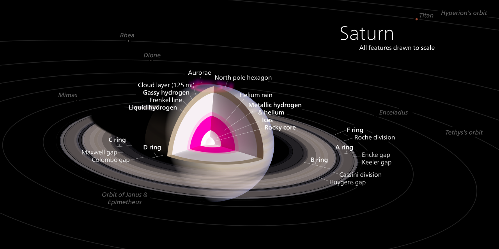
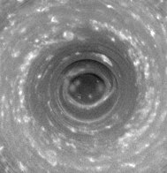

Saturn is the sixth planet from the Sun and the second largest planet in our solar system. Adorned with a dazzling system of icy rings, Saturn is unique among the planets. It is not the only planet to have rings, but none are as spectacular or as complex as Saturn's.
Saturn's interior is thought to be composed of a rocky core, surrounded by a deep layer of metallic hydrogen, an intermediate layer of liquid hydrogen and liquid helium, and finally, a gaseous outer layer. Saturn has a pale yellow hue due to ammonia crystals in its upper atmosphere. An electrical current within the metallic hydrogen layer is thought to give rise to Saturn's planetary magnetic field, which is weaker than Earth's, but which has a magnetic moment 580 times that of Earth due to Saturn's larger size. Saturn's magnetic field strength is around one-twentieth of Jupiter's.[31] The outer atmosphere is generally bland and lacking in contrast, although long-lived features can appear. Wind speeds on Saturn can reach 1,800 kilometres per hour (1,100 miles per hour).
The planet has a prominent ring system, which is composed mainly of ice particles, with a smaller amount of rocky debris and dust. At least 146 moons[32] are known to orbit the planet, of which 63 are officially named; this does not include the hundreds of moonlets in its rings. Titan, Saturn's largest moon and the second largest in the Solar System, is larger (while less massive) than the planet Mercury and is the only moon in the Solar System to have a substantial atmosphere.[33]
Name and symbol
Saturn is named after the Roman god of wealth and agriculture and father of Jupiter. Its astronomical symbol (♄) has been traced back to the Greek Oxyrhynchus Papyri, where it can be seen to be a Greek kappa-rho ligature with a horizontal stroke, as an abbreviation for Κρονος (Cronus), the Greek name for the planet ().[34] It later came to look like a lower-case Greek eta, with the cross added at the top in the 16th century to Christianize this pagan symbol
Saturn is a gas giant composed predominantly of hydrogen and helium. It lacks a definite surface, though it is likely to have a solid core.[36] Saturn's rotation causes it to have the shape of an oblate spheroid; that is, it is flattened at the poles and bulges at its equator. Its equatorial radius is more than 10% larger than its polar radius: 60,268 km versus 54,364 km.[6] Jupiter, Uranus, and Neptune, the other giant planets in the Solar System, are also oblate but to a lesser extent. The combination of the bulge and rotation rate means that the effective surface gravity along the equator, 8.96 m/s2, is 74% of what it is at the poles and is lower than the surface gravity of Earth. However, the equatorial escape velocity of nearly 36 km/s is much higher than that of Earth.[37]

Despite consisting mostly of hydrogen and helium, most of Saturn's mass is not in the gas phase, because hydrogen becomes a non-ideal liquid when the density is above 0.01 g/cm3, which is reached at a radius containing 99.9% of Saturn's mass. The temperature, pressure, and density inside Saturn all rise steadily toward the core, which causes hydrogen to be a metal in the deeper layers.[40]
Hexagonal cloud patterns
A persisting hexagonal wave pattern around the north polar vortex in the atmosphere at about 78°N was first noted in the Voyager images.[69][70][71] The sides of the hexagon are each about 14,500 km (9,000 mi) long, which is longer than the diameter of the Earth.[72] The entire structure rotates with a period of 10h 39m 24s (the same period as that of the planet's radio emissions) which is assumed to be equal to the period of rotation of Saturn's interior.[73] The hexagonal feature does not shift in longitude like the other clouds in the visible atmosphere.[74] The pattern's origin is a matter of much speculation. Most scientists think it is a standing wave pattern in the atmosphere. Polygonal shapes have been replicated in the laboratory through differential rotation of fluids.[75][76]

HST imaging of the south polar region indicates the presence of a jet stream, but no strong polar vortex nor any hexagonal standing wave.[77] NASA reported in November 2006 that Cassini had observed a "hurricane-like" storm locked to the south pole that had a clearly defined eyewall.[78][79] Eyewall clouds had not previously been seen on any planet other than Earth. For example, images from the Galileo spacecraft did not show an eyewall in the Great Red Spot of Jupiter.[80]
Orbit and rotation
The average distance between Saturn and the Sun is over 1.4 billion kilometers (9 AU). With an average orbital speed of 9.68 km/s,[6] it takes Saturn 10,759 Earth days (or about 29+1⁄2 years)[86] to finish one revolution around the Sun.[6] As a consequence, it forms a near 5:2 mean-motion resonance with Jupiter.[87] The elliptical orbit of Saturn is inclined 2.48° relative to the orbital plane of the Earth.[6] The perihelion and aphelion distances are, respectively, 9.195 and 9.957 AU, on average.[6][88] The visible features on Saturn rotate at different rates depending on latitude, and multiple rotation periods have been assigned to various regions (as in Jupiter's case).
Astronomers use three different systems for specifying the rotation rate of Saturn. System I has a period of 10h 14m 00s (844.3°/d) and encompasses the Equatorial Zone, the South Equatorial Belt, and the North Equatorial Belt. The polar regions are considered to have rotation rates similar to System I. All other Saturnian latitudes, excluding the north and south polar regions, are indicated as System II and have been assigned a rotation period of 10h 38m 25.4s (810.76°/d). System III refers to Saturn's internal rotation rate. Based on radio emissions from the planet detected by Voyager 1 and Voyager 2,[89] System III has a rotation period of 10h 39m 22.4s (810.8°/d). System III has largely superseded System
Observation
Saturn is the most distant of the five planets easily visible to the naked eye from Earth, the other four being Mercury, Venus, Mars and Jupiter. (Uranus, and occasionally 4 Vesta, are visible to the naked eye in dark skies.) Saturn appears to the naked eye in the night sky as a bright, yellowish point of light. The mean apparent magnitude of Saturn is 0.46 with a standard deviation of 0.34.[23] Most of the magnitude variation is due to the inclination of the ring system relative to the Sun and Earth. The brightest magnitude, −0.55, occurs near in time to when the plane of the rings is inclined most highly, and the faintest magnitude, 1.17, occurs around the time when they are least inclined.[23] It takes approximately 29.4 years for the planet to complete an entire circuit of the ecliptic against the background constellations of the zodiac. Most people will require an optical aid (very large binoculars or a small telescope) that magnifies at least 30 times to achieve an image of Saturn's rings in which clear resolution is present.[48][151] When Earth passes through the ring plane, which occurs twice every Saturnian year (roughly every 15 Earth years), the rings briefly disappear from view because they are so thin. Such a "disappearance" will next occur in 2025, but Saturn will be too close to the Sun for observations.[176]
Saturn and its rings are best seen when the planet is at, or near, opposition, the configuration of a planet when it is at an elongation of 180°, and thus appears opposite the Sun in the sky. A Saturnian opposition occurs every year—approximately every 378 days—and results in the planet appearing at its brightest. Both the Earth and Saturn orbit the Sun on eccentric orbits, which means their distances from the Sun vary over time, and therefore so do their distances from each other, hence varying the brightness of Saturn from one opposition to the next. Saturn also appears brighter when the rings are angled such that they are more visible. For example, during the opposition of 17 December 2002, Saturn appeared at its brightest due to a favorable orientation of its rings relative to the Earth,[177] even though Saturn was closer to the Earth and Sun in late 2003.[177]